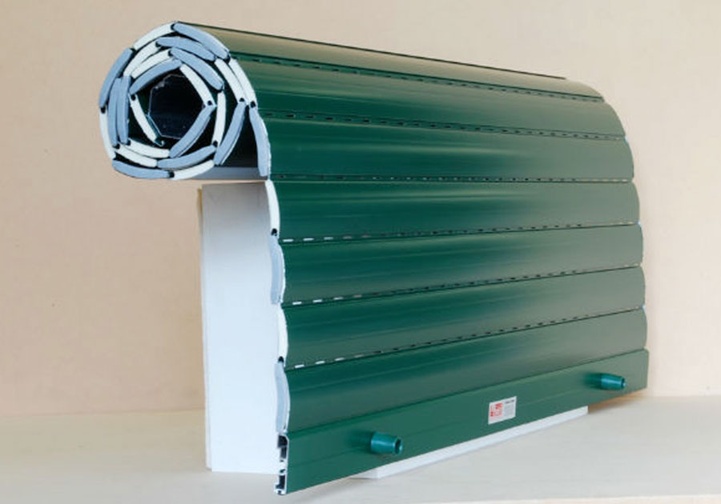

Apple, se si è gentili le riparazioni sono omaggio? | MobileLabs
 Tom’s hardware Game Division MobileLabs Cultura Pop MotorLabs B2BLABS More forum offerte forum Recensioni App della settimana 5G iPhone 12 Android 12 Smartphone pieghevole OPPO Find X3 Codici sconto AppleApple, se si è gentili le riparazioni sono omaggio?
di Luca Zaninello giovedì 18 marzo 2021 18:35 2 min vai ai commentiPiù informazioni su
Apple Genius Apple iPhone Apple Store Apple appleLa gentilezza è sempre ben accetta, soprattutto quando vi recate in un negozio fisico in cui avete acquistato un prodotto magari per richiedere assistenza. Non è una vera e propria regola, tuttavia se vi ponete nel modo giusto con la persona che vi sta di fronte, che ricordiamo sta solo facendo il proprio lavoro e non ha generalmente colpe di alcun tipo, è molto più probabile sia bendisposta a cercare di aiutarvi trovando la migliore soluzione.
Negli Apple Store sembra che questa sia una politica ben conosciuta ai dipendenti che, in caso abbiate un grosso problema, potrebbe farvi risparmiare un bel po’ di quattrini!
Credit: AppleInsiderNon sorprende scoprire che i dipendenti dei negozi siano ovviamente disposti ad aiutare con più impegno e dedizione i clienti gentili ed educati , alla fine dei conti siamo tutti esseri umani e nella maggior parte dei casi i problemi che potete avere con i vostri dispositivi non sono in alcun modo causa di alcuna delle parti in causa.
Negli Apple Store , però, sembra che esista un vero e proprio programma che premia la gentilezza e l’educazione dei clienti. In un video diventato virale su TikTok , il quale è stato mandato come risposta alla conversazione “ segreti che solo i dipendenti conoscono “, è stato spiegato quello che sembra essere un programma di premio per i clienti più affezionati, gentili e bendisposti a collaborare con i dipendenti del negozio.
L’utente @Tanicornerstone ha così spiegato: “ Una volta lavoravo per Apple. Per prima cosa; clienti maleducati, abbiamo davvero alcuni clienti psicopatici in quel negozio, ma se sei maleducato con i Genius o con le persone alla cassa, otterrai comunque una soluzione al tuo problema ma molto probabilmente pagherai per questo “.
È giusto specificare che non si tratta di una “ripicca” contro i clienti maleducati , essi pagheranno esattamente quanto previsto dal tariffario per le riparazioni o le consulenze. Se siete delle persone educate e a modo, tuttavia, potreste essere sopresi da quello che la ragazza definisce una “ surprise and delight “.
“ Vedevo spesso persone che entravano con telefoni danneggiati dall’acqua e non era permesso sostituirli senza farli pagare. Tuttavia, i Genius hanno usato una ‘surprise and delight’ per essere in grado di dare a qualcuno una sostituzione gratuita “, ha affermato.
@tanicornerstone #stitch with @annaxjames apple goss tips and tricks ♬ original sound – Tani
Gli utenti che hanno commentato il video di TikTok hanno confermato l’affermazione e tra essi sono inclusi sia i clienti che hanno ricevuto un servizio eccezionale sia altri ex dipendenti dei negozi Apple. Alcuni utenti, tuttavia, hanno smentito le affermazioni secondo cui Apple aveva una tale politica, mentre altri hanno affermato che il video equipara erroneamente “surprise and delight” a programmi che sono stati poi interrotti.
Come ricorda AppleInsider , non è chiaro se il programma “surprise and delight” sia ancora in vigore o se fosse effettivamente una politica dei negozi di vendita al dettaglio di Apple.
Tuttavia, sembra che ci siano molti racconti che suggeriscono che i clienti gentili con il personale possono ottenere un servizio migliore. Se poi questa sia una vera politica di Apple oppure una semplice conseguenza del trattare i dipendenti dei negozi con pazienza e rispetto, probabilmente non lo sapremo mai…
Il nuovo MacBook Air con chip Apple M1 è disponibile su Amazon con spedizione in un giorno, non fatevelo scappare!
di Luca Zaninello giovedì 18 marzo 2021 18:35 2 min vai ai commenti SharesPiù informazioni su
Apple Genius Apple iPhone Apple Store Apple appleScarica gratis
l'app di Tom's Hardware
Vuoi ricevere aggiornamenti sui tuoi topics preferiti ogni giorno?
Iscriviti alla newsletter
Leggi i commenti articolo precedente: iPhone 12, a rischio la produzione di display OLED prossimo articolo: Oppo Find X3 Pro 5G recensione, un’esplosione di colori Home Tom’s hardware Game Division MobileLabs Cultura Pop MotorLabs B2BLABS More forum Offerte Recensioni App della settimana iPhone 12 Smartphone pieghevole OPPO Find X3 5G Android 12 Codici sconto 4 0 OffertaCucce, trolley, voliere e tante altre offerte per gli animali domestici!
Vieni a scoprire quali sono le incredibili offerte dedicate agli animali domestici su Amazon. Tantissime…
di Gabriel Valenti - 2 ore fa 3 0 Offerta68% di sconto su Microsoft 365 Family e sui migliori antivirus
Amazon propone la suite Microsoft 365 Family ad un prezzo stracciato, con la possibilità di…
di Dario De Vita - 3 ore fa Tom's Hardware Game division MobileLabs Cultura Pop MotorLabs B2BLabs More Home Le news di oggi Le news di ieri Le news dell'altro ieri